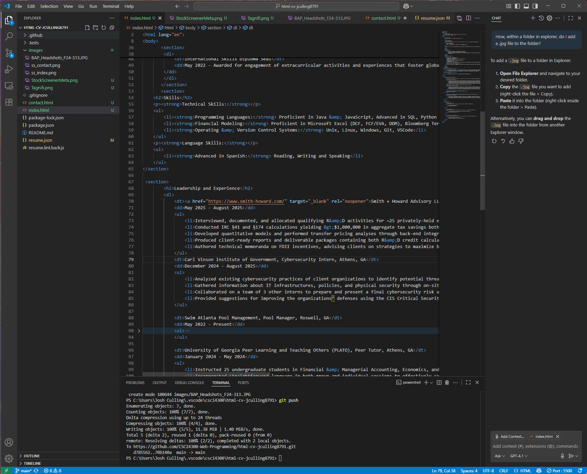
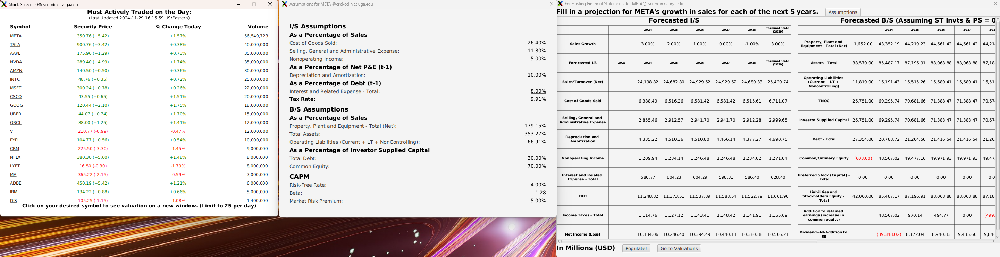
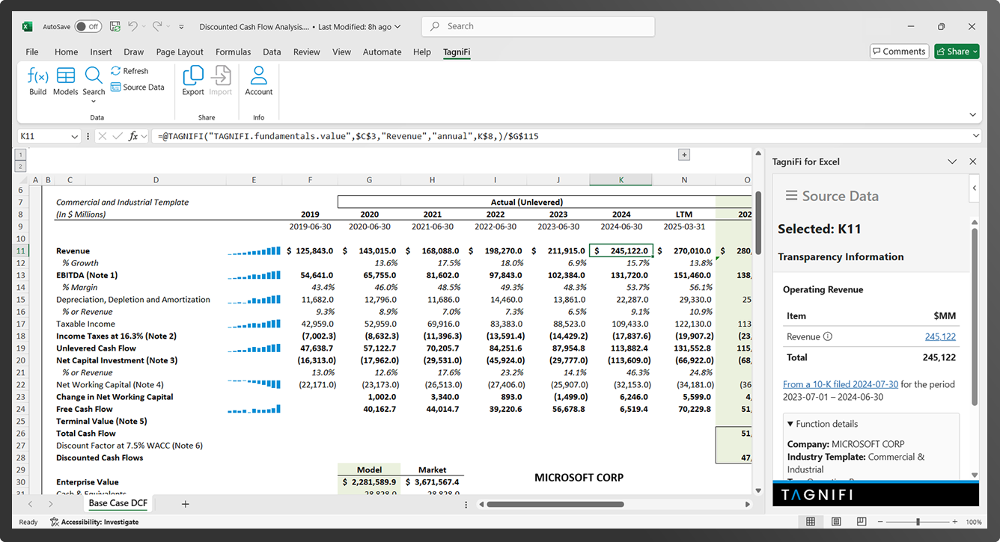

Josh Culling
My passion is to be a liason between financial analytics, the decisions it drives, and the programs that enable them.
Kennesaw, GA 30152 (404) 405-8772 jcc54680@uga.edu
Education
- Major: Bachelor of Business Administration, Finance with an Emphasis in Pricing & Valuation; Minor, Computer Science
- Major GPA: 4.00/4.00; Cumulative GPA: 3.87/4.00
- Honors: Dean's List (6 Semesters), Zell Miller Scholarship (Full Tuition), Charter Scholarship (1 of 225 New Students)
- Relevant Coursework: Intermediate Accounting I, II, & III, Software Programming, Discrete Mathematics, Derivative Security Markets, Securities Trading, Fixed Income Securities, Web Programming
Professional Experience
Smith + Howard Advisory LLC, Specialty Tax Services Intern, Atlanta, GA
May 2025 - August 2025
- Interviewed, documented, and allocated qualifying R&D activities for ~25 privately-held entities across GA, MN, SC, & TN
- Conducted IRC §41 and §174 calculations yielding >$1,000,000 in aggregate tax savings both federally and at the state level
- Developed quantitative models and performed transfer pricing analyses via back-end integration of TagniFi functions into Microsoft Excel, improving accuracy in validating international transactions and benchmarking client financials
- Produced client-ready reports and deliverable packages containing both R&D credit calculations and transfer pricing analyses
- Authored technical memoranda on FDII incentives, advising clients on strategies to maximize benefits under OBBBA revisions
Carl Vinson Institute of Government, Cybersecurity Intern, Athens, GA
December 2024 - August 2025
- Analyzed existing cybersecurity practices of client organizations to identify potential threats and assess vulnerabilities
- Gathered information about IT infrastructures, policies, and physical security through on-site visits to client organizations
- Collaborated on a team of 3 interns to prepare and present a final cybersecurity risk assessment of client organizations
- Provided suggestions for improving organizations' defenses using the CIS Critical Security Controls
Swim Atlanta Pool Management, Pool Manager, Roswell, GA
May 2022 - Present
- Maintained safety for an average of 100+ swimmers daily on a team of 3 staff members
- Handled staff of 15 employees; responsible for CPR training, scheduling, and on-duty performance
- Active-Duty Lifeguard at several country clubs & neighborhoods
University of Georgia Peer Learning and Teaching Others (PLATO), Peer Tutor, Athens, GA
January 2024 - May 2024
- Instructed 25 undergraduate students in Financial & Managerial Accounting, Economics, and Statistics
- Used clear, straightforward language in group and individual sessions to convey complex concepts
- Developed detailed exercises to increase student understanding of accounting and risk assessment principles
Achievements
- Cybersecurity Certificates
- October 2024
- International Skills Diploma Seal
- May 2022
Cybersecurity Certificates
October 2024
- Google Cybersecurity Certificate Course, Cybersecurity for Critical Urban Infrastructure (MITx Self-Study), Using the Comm CS Maturity Model to Develop a CS Program (University of Texas San Antonio)
International Skills Diploma Seal
May 2022
- Awarded for engagement of extracurricular activities and experiences that foster global competencies
- Taught English to Spanish-speaking elementary school children in groups of 30, and in individual settings
Campus Involvement
Beta Alpha Psi, Initiate, Athens, GA
August 2024 - Present
- 1 of 50 students selected as initiates to the University of Georgia Accounting Honors Society
- Engaged in professional development through networking with accounting professionals and active industry discussions
Society for Cyber Security (SCS), Member, Athens, GA
August 2024 - Present
- Develop technical knowledge of the cybersecurity field, discuss current market events, and network with IT professionals
Skills
Technical Skills:
- Programming Languages: Proficient in Java & JavaScript, Advanced in SQL, Python & HTML
- Financial Modeling: Proficient in Microsoft Excel (DCF, FCF/EVA, DDM), Bloomberg Terminal, TagniFi, Power BI
- Operating & Version Control Systems: Unix, Linux, Windows, Git, VSCode
Language Skills:
- Advanced in Spanish; Reading, Writing and Speaking
Projects
Resume Builder
- JSON to HTML conversion
- Practice with DOM
Stock Screener
- JavaFX Application to automate DCFs for high-volume equities
- CSCI 1302 Final Project
Transfer Pricing Automation
- TagniFi integration into Excel
- Automated benchmarking for private entities
Interests
Golf, Swimming, NFL, Chess, Disc Golf, Pickleball